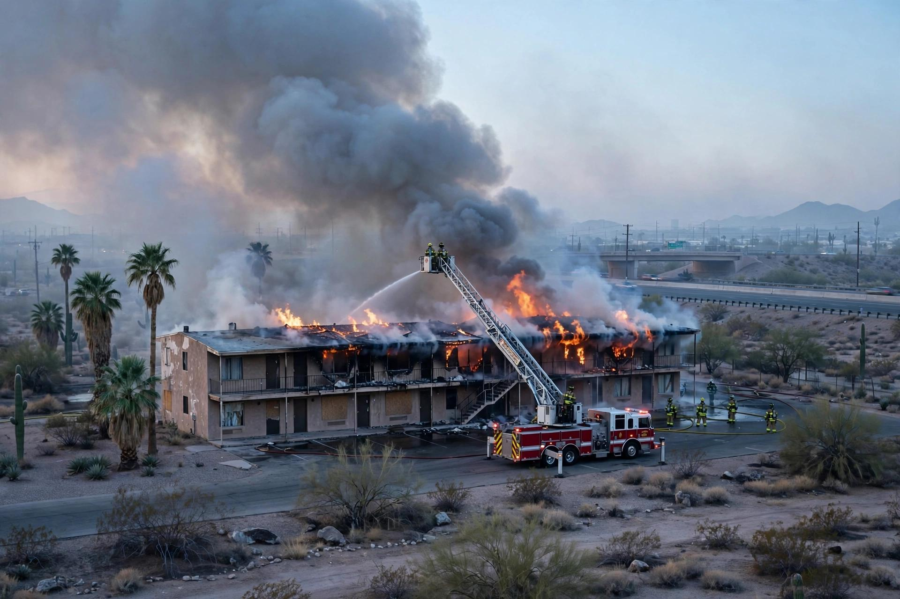

फीनिक्स, एरिजोना: I-17 और ग्रीनवे रोड के पास खाली ट्रैवलॉज में दूसरी अलार्म वाली आग
शुक्रवार सुबह 5:30 बजे के बाद टीमों को इंटरस्टेट 17 के पास ट्रैवलॉज बाय विंडहैम में बुलाया गया, एक खाली इमारत की छत से आग निकलती मिली, और करीब आधे घंटे में आग पर काबू पा लिया गया। कोई घायल नहीं हुआ। यह दो महीने से कुछ अधिक समय में उसी होटल में दूसरी आग थी।

मुख्य बिंदु
- शुक्रवार, 23 अक्टूबर की सुबह उत्तर फीनिक्स में एक खाली होटल इमारत में बड़ी आग लग गई, आग छत से निकल आई और फीनिक्स अग्निशमन विभाग से दूसरी अलार्म वाली प्रतिक्रिया आई। कोई घायल नहीं हुआ, अधिकारियों…
- KTVK और KPHO (AZ Family) के अनुसार सुबह 5:30 बजे के बाद टीमों को 25वें एवेन्यू और ग्रीनवे रोड के पास, इंटरस्टेट 17 के किनारे स्थित ट्रैवलॉज बाय विंडहैम में बुलाया गया। द एरिजोना रिपब्लिक ने बताया…
- आग के आकार और पास की भरी हुई इमारतों को खतरे के कारण घटना को दूसरी अलार्म वाली तैनाती में बढ़ा दिया गया, जॉनसन ने कहा। दूसरी अलार्म सामान्य पहली प्रतिक्रिया से अधिक अग्निशामकों और उपकरणों को लाती है।
शुक्रवार, 23 अक्टूबर की सुबह उत्तर फीनिक्स में एक खाली होटल इमारत में बड़ी आग लग गई, आग छत से निकल आई और फीनिक्स अग्निशमन विभाग से दूसरी अलार्म वाली प्रतिक्रिया आई। कोई घायल नहीं हुआ, अधिकारियों ने कहा, और आग कैसे शुरू हुई यह जानने के लिए जांचकर्ता घंटों बाद भी मौके पर काम कर रहे थे।
KTVK और KPHO (AZ Family) के अनुसार सुबह 5:30 बजे के बाद टीमों को 25वें एवेन्यू और ग्रीनवे रोड के पास, इंटरस्टेट 17 के किनारे स्थित ट्रैवलॉज बाय विंडहैम में बुलाया गया। द एरिजोना रिपब्लिक ने बताया कि अधिकारी करीब 5:45 बजे पहुंचे और एक खाली इमारत से घना धुआं और छत से आग निकलती मिली, अग्निशमन विभाग के प्रवक्ता कैप्टन माइक जॉनसन के हवाले से।
दूसरी अलार्म, और ऊपर से बुझाई गई आग
आग के आकार और पास की भरी हुई इमारतों को खतरे के कारण घटना को दूसरी अलार्म वाली तैनाती में बढ़ा दिया गया, जॉनसन ने कहा। दूसरी अलार्म सामान्य पहली प्रतिक्रिया से अधिक अग्निशामकों और उपकरणों को लाती है।
अग्निशामक आग के फैलाव को रोकने में सफल रहे और उन्होंने इसे ऊपर से बुझाया, रिपब्लिक ने बताया। AZ Family के अनुसार टीमों ने करीब आधे घंटे में आग पर काबू पा लिया। माना जा रहा था कि इमारत खाली थी, लेकिन अग्निशामकों को यह सुनिश्चित करने के लिए अभी उसे खाली करना था कि अंदर कोई नहीं है, स्टेशन ने बताया।
शुक्रवार सुबह यह आग व्यापक रूप से देखी गई स्थानीय खबर बनी। FOX 10 फीनिक्स ने I-17 और ग्रीनवे रोड के पास एरिजोना परिवहन विभाग के ट्रैफिक कैमरों से लाइव तस्वीरें दिखाईं, और ABC15 ने भी उसी कोने पर दूसरी अलार्म वाली प्रतिक्रिया की रिपोर्ट की।
दो महीने में उसी होटल में दूसरी आग
शुक्रवार की आग दो महीने से कुछ अधिक समय में उसी ट्रैवलॉज संपत्ति पर दूसरी आग थी। 16 अगस्त को करीब सुबह 3 बजे होटल में आग लगी थी और वह भी दूसरी अलार्म तक पहुंच गई थी। FOX 10 ने उस समय बताया था कि 30 मेहमानों को उनके कमरों से निकाला गया, दूसरी मंजिल से घना धुआं और आग निकल रही थी, और 50 से अधिक इकाइयां प्रभावित हुई थीं। AZ Family के अनुसार उस अगस्त वाली आग से 30 लोग विस्थापित हुए थे। अगस्त में भी कोई घायल नहीं हुआ था, और सामुदायिक सहायता कार्यक्रम ने होटल प्रबंधन के साथ मिलकर मेहमानों को नए कमरों में भेजा था।
यही इतिहास एक कारण है कि इस बार जली इमारत खाली होने के बावजूद शुक्रवार की कॉल पर बड़ी प्रतिक्रिया आई। खाली इमारत में भी अंदर शरण लिए लोग हो सकते हैं, इसलिए आग बुझने के बाद टीमों ने ढांचे को खाली करने की योजना बनाई थी।
जो अभी पता नहीं है
शुक्रवार की आग का कारण पता नहीं है। जॉनसन ने रिपब्लिक को बताया कि अग्निशमन अधिकारी यह पता लगाने का काम कर रहे हैं कि आग किस कारण लगी, और आग बुझने के घंटों बाद भी जांचकर्ता मौके पर रहे। अग्निशमन विभाग ने किसी के घायल होने की सूचना नहीं दी। अधिकारियों ने यह नहीं बताया कि खाली इमारत का कितना हिस्सा क्षतिग्रस्त हुआ, या सुबह की प्रतिक्रिया के दौरान राजमार्ग कैमरों में दिखी तस्वीरों के अलावा आग ने इंटरस्टेट 17 के यातायात को प्रभावित किया या नहीं।
स्रोत
द एरिजोना रिपब्लिक ने 5:45 बजे की प्रतिक्रिया, खाली इमारत की छत से आग निकलने का कैप्टन माइक जॉनसन का विवरण, दूसरी अलार्म में बढ़ोतरी और घंटों बाद भी मौके पर मौजूद जांचकर्ताओं की रिपोर्ट की। KTVK और KPHO (AZ Family) ने 5:30 बजे के बाद की कॉल, करीब आधे घंटे में आग पर काबू, अभी खाली किया जाना बाकी खाली इमारत, और उसी होटल में 16 अगस्त की आग की रिपोर्ट की। FOX 10 फीनिक्स ने अगस्त की आग में 30 लोगों की निकासी और 50 से अधिक प्रभावित इकाइयों की रिपोर्ट की, और शुक्रवार को राजमार्ग कैमरों की लाइव तस्वीरें दिखाईं।
टाइमलाइन
- Aug 16, 2026उसी ट्रैवलॉज होटल में करीब सुबह 3 बजे आग लगी और वह दूसरी अलार्म तक पहुंच गई। 30 मेहमानों को निकाला गया, 50 से अधिक इकाइयां प्रभावित हुईं और 30 लोग विस्थापित हुए। कोई घायल नहीं हुआ।
- Oct 23, 2026सुबह 5:30 बजे के बाद टीमों को 25वें एवेन्यू और ग्रीनवे रोड के पास ट्रैवलॉज बाय विंडहैम में बुलाया गया और एक खाली इमारत की छत से घना धुआं और आग निकलती मिली।
- Oct 23, 2026आग के आकार और पास की भरी इमारतों को खतरे के कारण प्रतिक्रिया को दूसरी अलार्म में बढ़ा दिया गया। अग्निशामकों ने करीब आधे घंटे में आग पर काबू पा लिया।
- Oct 23, 2026जांचकर्ता घंटों बाद भी होटल में रहे। फीनिक्स अग्निशमन विभाग ने किसी के घायल होने की सूचना नहीं दी और आग का कारण पता नहीं लगाया था।
स्रोत
- The Arizona Republic (azcentral): Large fire breaks out at Phoenix Travelodge by Wyndham near I-17
- KTVK/KPHO (AZ Family) via Daily Dispatch: Firefighters work to extinguish massive hotel fire in Arizona
- ABC15 Arizona: Second-alarm fire breaks out near 25th Avenue and Greenway Road in Phoenix
- FOX 10 Phoenix: Fast-moving blaze forces 30 to evacuate from Phoenix hotel (August 16 fire at the same Travelodge)